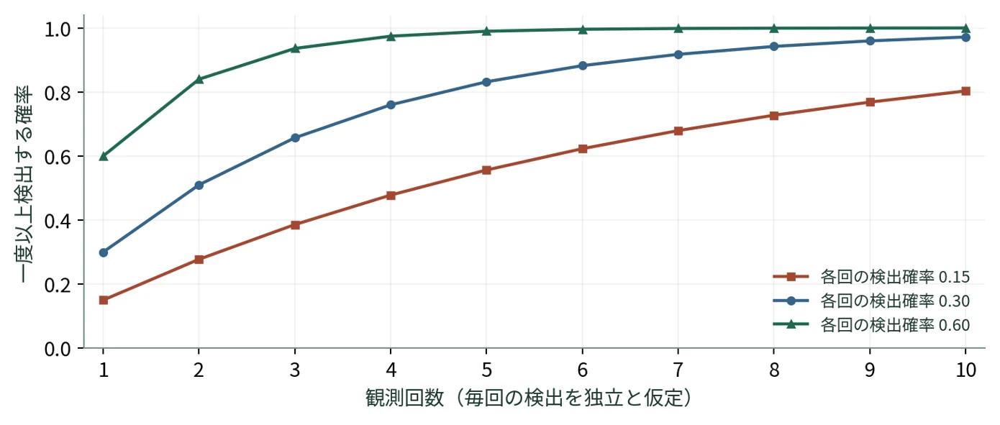

第60章 夜明けの合唱を、誰の耳で数えたか
環境音を作曲の素材にすることと、生き物の声を調査することの交わり。
この章で学ぶこと
- サウンドスケープ作品を、場所・語り・編集の層に分けて聴く
- 「検出確率＝鳴く確率×聞き取れる確率」のモデルを使う
- 自分で環境音を記録し、分類と作曲に使う
日の出前に窓を開ける。遠い車が切れた一瞬、それまで聞こえなかった鳥の短い節が現れる。この瞬間を楽譜に書くなら、鳥のパートに入口を記してよい。鳥の生息を調査する野帳には「この時刻に初めて検出」と書く。二つの記述が分かれるところに、環境音による作曲と生態学の両方の仕事がある。
都市の低音を引くという作曲
ヒルデガルト・ヴェスターカンプの《Kits Beach Soundwalk》（1989）は、ヴァンクーヴァーの海辺で採った音と語りから出発する。作者の解説によれば、冬の静かな朝、都市の持続音を背に、水とフジツボの微かな音が聞こえた。彼女が三十年以上後に同じ海岸を再訪した音声ドキュメンタリー《Listening is Action》には、当時の作品の抜粋、再訪時の風と波、制作過程を語る声が収められている。まず映像を伏せ、海岸の微細な音がどこで前に出るか記す。次に原稿を開き、その時聞こえた声が作品中の語りか、後年の聞き取りかを照合する。浜での出来事、スタジオでの語り、聴き手が情報を与えられた瞬間という、三つの時刻が一つの音源に共存している。
遠景を弱めた後に小さなクリックが音楽の主役になる。都市音を一定の音高の持続低音、クリックをその上に置く打音と聞き取ることもできる。ところが遠景のゲインを上げれば拍と聞こえた配列が再び背景に溶ける。どの旋律が前景にあるかを楽器の名前で指定できた室内楽と、ここで同じ問いを比べてほしい。聴覚と群化で問題にした音源の分離が、ここでは作曲そのものになっている。
音が現れるまでの二つの確率
目当ての鳥がいる地点で、長さをそろえた一つの時間窓を観測する。そこで鳥が鳴く確率を 、鳴いたときに録音と人の判定まで通過する条件付き確率を とする。誤認がないモデルでは、一回の検出確率は となる。鳴いた場所が同じでも、風向き、マイクの方向、車との周波数の重なり方によって は変わる。同じマイクで録り続けても、発声活動の日周変動により は変わる。これらを分けるには、例えば別手段の目視記録や既知のテスト音の観測が要る。
命題。 生息状態が観測期間中は一定で、各回の検出が互いに独立、かつ が一定なら、 回のうち一回以上検出する確率は である。証明。 一回の不検出の確率は 。独立性から全回不検出の確率はその 個の積になる。一回以上の検出はこの事象の補集合である。例えば なら、三回観測しても全回不検出が 残る。同じ大雨の一分を三分割すると三回ともマスクされやすくなる。この三片を独立な観測と仮定して得た数値には根拠が乏しい。

同じ夜明けを違う横軸で描く
Buxton らはアラスカのグレイシャーベイで野鳥の季節活動を音から調べた。原論文の図2を読み、時刻ごとの中央値の曲線に日の出の縦線を重ねて見る。論文では日の出の前後を切り出し、強い風・雨・人為音に遮られた録音を判定して除外した。暦上の同じ時刻と、太陽が昇る時刻からの差は、別の横軸である。4時50分の声を毎日そろえて図にする場合と、「日の出の10分前」をそろえる場合を考えよう。季節につれて日の出が動けば、この二つの図で声のピークの幅も変わる。移動平均の窓を選ぶことと同じく、座標の原点の選択にも生態学上の仮説が入っている。
やってみよう
身近な実習。 同じ場所で二日、同じ機器・方向・高さで各60秒を記録する。場所を公開する必要はない。日付、日の出からの分差、天候、入力ゲインの自動調整の有無を添える。各録音を10秒窓六個に区切り、目標音を「聞き取った」「強い遮蔽」「聞き取れず」に分類する。二回目は日付を隠して逆順に聞く。意見の揺れた箇所を残し、原因を帯域の重なり、単発の物音との類似、先入観の三候補に分ける。人声の入る素材は観察記録だけにとどめても実習は成立する。
やってみよう
作曲への折り返し。 自分で採った短い環境音から、持続音と反復音を一組選ぶ。冒頭八秒は加工せず、次の八秒は持続音の多い帯域だけを緩やかに下げ、最後の八秒で元へ戻す。音量変化の始点と、反復音に初めて拍を感じた時刻を別々に書く。聴き手によって後者が違えば、その差も演奏記録の一部にできる。
やってみよう
問いと解答。 六窓のうち二窓が遮蔽、二窓で検出された。検出窓の割合はいくらか。全録音時間を分母にすれば 、遮蔽窓を取り除けば 。前者はこの記録全体に占める検出窓、後者は観測可能と判定した窓内の検出率である。雨の時ほど発声の仕方が変わるとすれば、後者をそのまま一日の発声率に外挿できない。いずれの値からも、二羽がいたとは推定できない。
ここだけ押さえる
- 「聞こえなかった」は「いなかった」と同じではない。
- 独立な観測を n 回すると、一度でも検出する確率は 1−(1−p)n。
- 横軸を時計の時刻にするか日の出からの時間にするかにも、仮説が入る。
この章の資料
- 抜粋を含む音声作品と逐語録。再訪の現場音と過去の作品の挿入を聴き分ける。《Listening is Action》音源・論文と逐語録
- 編成、季節、収音対象を作者自身の文章で確認できる。ヴェスターカンプ《Kits Beach Soundwalk》作品解説
- 図1の地点、図2の日の出、方法欄の除外条件を並べ、何を比較したか復元する。Buxton ほか、グレイシャーベイの生物音響調査